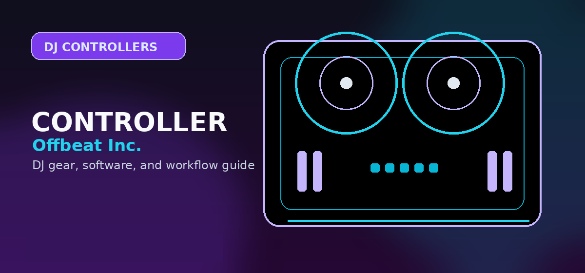

Best DJ Controllers for Beginners
The beginner controller buying guide that decides between FLX2, FLX4, Hercules Inpulse, Numark Mixtrack, and the first serious upgrade path.

Disclosure: This page uses affiliate links. We may earn a commission at no extra cost to you. Full disclosure →
The beginner controller buying guide that decides between FLX2, FLX4, Hercules Inpulse, Numark Mixtrack, and the first serious upgrade path.
Best beginner DJ controllers: quick ranking
The best beginner controller is not always the cheapest one. The right first controller should teach real DJ habits, work with current software, connect easily to speakers and headphones, and stay useful long enough that the buyer does not replace it after three weeks.
AlphaTheta / Pioneer DJ DDJ-FLX4
The FLX4 remains the safest first serious controller because it teaches the modern Pioneer-style layout, works naturally with rekordbox, supports Serato, has proper beginner features, and is not immediately outgrown. It is the first recommendation for anyone who can stretch above ultra-budget pricing.
Confirm today’s price, stock, and return policy before buying.
AlphaTheta DDJ-FLX2
The FLX2 is the right recommendation for someone who wants the smallest credible modern entry point and may start from phone, tablet, or laptop workflows. It supports rekordbox, djay, Serato DJ Lite/Pro licensing paths, and Traktor Play, but its compact I/O and simplified controls make it a practice controller, not a mobile-gig foundation.
Confirm today’s price, stock, and return policy before buying.
Hercules DJControl Inpulse 500
The Inpulse line is useful when the you want visible learning aids, beatmatching support, and a less Pioneer-dependent learning path. It is not the obvious club-prep choice, but it can be a strong teaching tool.
Confirm today’s price, stock, and return policy before buying.
Beginner decision table
| Controller | Best for | Software path | Main limitation |
|---|---|---|---|
| DDJ-FLX4 | Most beginners who want a real upgrade path | rekordbox first, Serato compatible | Costs more than toy-level starters |
| DDJ-FLX2 | Casual, tiny-desk, phone/tablet beginners | rekordbox, djay, Serato, Traktor Play paths | Limited outputs and controls |
| Hercules Inpulse 500 | Teaching beatmatch fundamentals | DJUCED / Serato path depending bundle | Less club-standard feel |
| Numark Mixtrack Pro FX | Budget Serato-style practice | Serato Lite with upgrade path | Older-feeling layout than newer AlphaTheta units |
| Used DDJ-400 | Budget rekordbox learners if condition is clean | rekordbox | Availability and condition vary |
What a first controller must have
Non-negotiables
- Headphone cueing so the user can prepare the next track privately.
- Two channel faders, crossfader, EQ, tempo controls, cue/play, and jog wheels.
- A supported software path that will not require awkward manual mapping.
- At least one speaker output that matches the user’s real setup.
Do not overbuy yet
- Four channels are unnecessary for most day-one learners.
- Standalone screens are convenient but expensive.
- Motorized platters matter for scratch-style performance, not every beginner.
- Premium FX sections only matter after the user can phrase and blend tracks.
Best beginner path by goal
Best DJ Software for Beginners
Use this if the buyer has not chosen rekordbox, Serato, djay, Traktor, or VirtualDJ yet.
Open →SetupConnect Controller to Speakers
Prevent the most common beginner wiring failure before the controller arrives.
Open →SkillManual Beatmatching
Use the controller to build transferable skills instead of only pressing sync.
Open →Beginner buying mistakes to avoid
The most common beginner mistake is buying based on the largest-looking controller in the budget instead of the controller that best teaches the workflow. Four channels, extra pads, huge jog wheels, and deep effects sections look impressive, but they do not help if the learner cannot cue, phrase, beatmatch, manage gain, or connect speakers correctly. A first controller should reduce friction, not create a new troubleshooting project.
The second mistake is ignoring software. A beginner who wants the AlphaTheta/Pioneer path should not accidentally buy hardware that points them away from rekordbox. A beginner who wants Serato stems, open-format performance, or scratch practice should not buy a rekordbox-first controller without understanding the tradeoff. A beginner who mostly wants Spotify or Apple Music practice should verify software and streaming restrictions before the controller purchase.
The third mistake is forgetting the rest of the setup. A controller without headphones is not a DJ setup. A controller without usable speaker output is not a party setup. A controller without legal music is not a real gig setup. Use this buying decision alongside the headphones, monitor speakers, software, and music-library guides so the setup works as a complete rig.
What your first controller must survive in the first 90 days
A good beginner controller should make practice easier, not hide the fundamentals. During the first 90 days, the priority is learning phrasing, cueing, EQ transitions, gain staging, and library prep.
- Week 1–2: learn deck loading, cue points, headphone cueing, and basic volume transitions.
- Week 3–6: practice phrase-matched transitions, EQ swaps, and manual beatmatching even if sync is available.
- Week 7–12: record practice mixes, organize playlists, and test the controller with the speakers/headphones you will actually use.
If the controller blocks any of those steps with weak audio outputs, awkward mappings, or missing headphone cueing, it is too limiting even if the price is low.
Official product and support pages
Best default path: FLX4 for rekordbox/Serato flexibility.
Best learning-feedback path: Hercules Inpulse 500 because the beatmatch aids are explicit.
Avoid app-only controllers unless portability matters more than long-term skill transfer.
Use these official pages to confirm current specifications, software compatibility, and support details before buying.
Frequently Asked Questions
Should a beginner buy the DDJ-FLX2 or DDJ-FLX4?
The FLX2 is the cheapest credible modern AlphaTheta path. The FLX4 is the better long-term beginner buy if budget allows.
Is a standalone DJ system good for beginners?
Usually not as the first purchase. Standalone systems are excellent but expensive; beginners should first confirm they enjoy the workflow.
Can you learn DJing on a phone or tablet?
Yes, especially with FLX2 or djay/rekordbox mobile workflows, but laptop/controller practice usually gives a clearer upgrade path.
What should I check before buying this DJ controller?
Confirm software compatibility, audio outputs, headphone cueing, driver support, and whether the controller fits your real practice or gig setup.
Is this controller category good for beginners?
It can be, but beginners should prioritize reliable software support, simple routing, and controls that teach transferable DJ habits before paying for advanced performance features.
Beginner buyer filter before checkout
Before clicking out to current prices, decide whether this is a tiny-desk practice controller, a long-term rekordbox/Serato starter, or the center of a complete first rig. Casual phone/tablet learners should compare the FLX2 path against the under-$200 controller guide. Buyers who want room to grow should sanity-check the FLX4 against controllers under $500 and the software compatibility matrix. If speakers, headphones, and music are not chosen yet, use the beginner setup guide before spending the whole budget on the controller.